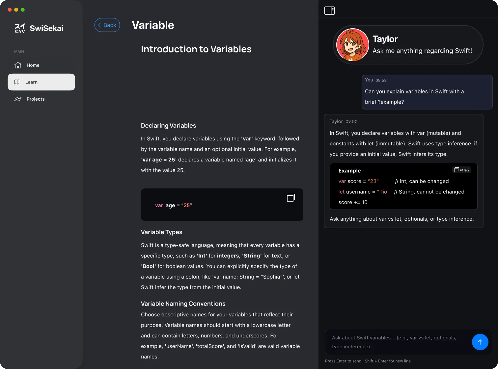
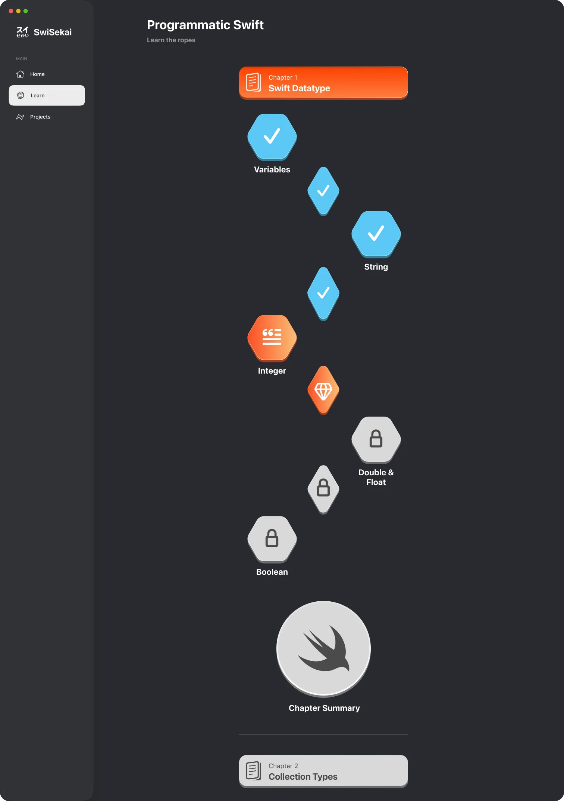
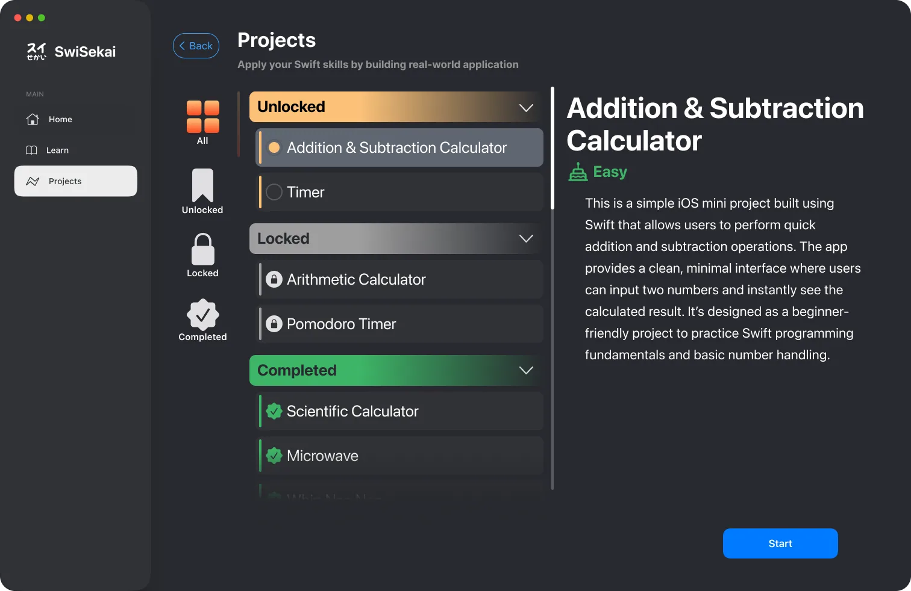
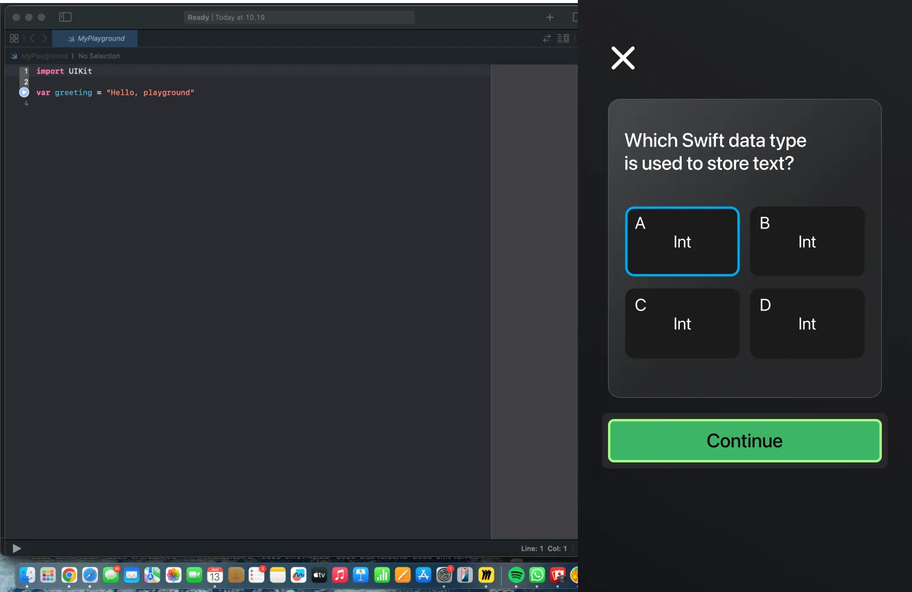

Tutorial hell
Great material. Dry, repetitive, and lonely.
Resources like “100 Days of Swift” are genuinely valuable — but reading documentation alone, day after day, burns people out before they build anything meaningful.
スイ せかい
Learn Swift in another world.
A Mac app that turns the grind of learning Swift into an adventure: a quest map of lessons, quizzes that unlock the path, projects you actually build — and Taylor, an AI mentor who never gets tired of your questions.

01The problem
Tutorial hell
Resources like “100 Days of Swift” are genuinely valuable — but reading documentation alone, day after day, burns people out before they build anything meaningful.
Isekai
SwiSekai — from “isekai”, another world — turns the curriculum into a map you travel through, and pairs you with an AI mentor who answers in context and cheers you on, like a private tutor.
02Try a lesson
A taste of how SwiSekai feels: pick an answer and watch the mentor react — thinking, then happy, or a little pouty — just like the moods she has in the app.
Question 1 of 4
TaylorHi! Pick an answer on the left and I’ll tell you how you did. No pressure — wrong answers are how the map gets drawn.
03How it works
01 · The path
Each chapter unfolds as a winding path of modules. Finish one and the next one lights up — the whole curriculum visible at once, and you always one step further along it.
02 · Quizzes
Modules end in quick quizzes. Pass, and the path moves forward; miss, and the mentor explains why before you try again.
03 · Projects
Unlock hands-on projects — a calculator, a timer, a Pomodoro timer — and build them to prove the chapter stuck. The app tracks what you’ve completed.
04 · Streaks
Progress, levels and a seven-day activity streak, kept on the Mac with SwiftData — small rewards for the habit that matters most.
05 · Any window
Wide window, sidebar. Narrow window, tab bar. The interface reshapes itself as the window changes, so learning next to Xcode still feels at home.
04The app




05Architecture
The AI layer sits behind a single protocol, so the app can switch between Google Gemini and OpenAI without the interface knowing — and stream every answer as it’s written.
@Model) for progress and levels.protocol ChatProvider {
func stream(_ prompt: String) -> AsyncThrowingStream<String, Error>
}
enum ChatProviderFactory {
static func make(_ kind: Provider) -> any ChatProvider {
switch kind {
case .gemini: GeminiProvider()
case .openAI: OpenAIProvider()
}
}
}
@Observable
final class MentorViewModel {
var reply = ""
var mood: Mood = .happy
private let provider = ChatProviderFactory.make(.gemini)
func ask(_ question: String) async {
mood = .thinking
reply = ""
do {
for try await token in provider.stream(question) {
reply += token // the answer streams in
}
mood = .happy
} catch {
mood = .pout
}
}
}06My role
A team project at the Apple Developer Academy. I architected the front end’s navigation, helped build the AI mentor, and saw the app through to the Mac App Store.
Architected the navigation to be fully responsive, with GeometryReader logic that switches between a sidebar and a tab bar as the window changes size.
Built the winding level map — the app’s signature “wavy” scroll view — with ScrollViewReader.
Helped implement the AI features: created the ChatProvider protocol, implemented the Gemini and OpenAI providers, and handled the asynchronous calls that stream Taylor’s answers.
Shaped the concept — how learning works in SwiSekai and how to make it fun — and architected the user flows.
Designed and deployed a native Swift learning app to the Mac App Store.